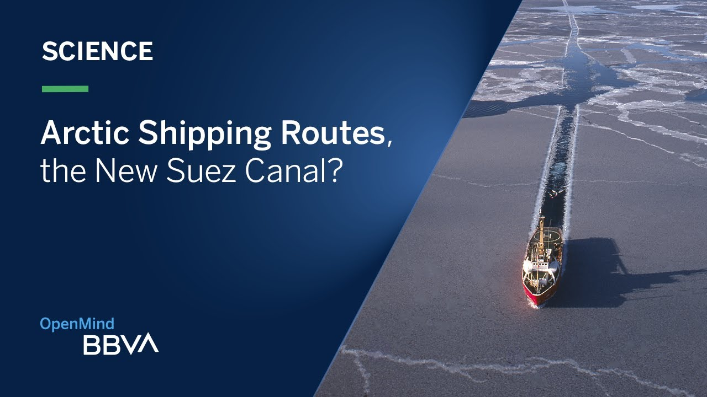

It's important to stress that these potential advantages are typically outweighed by the overall negative impacts of climate change. Here are some definitions and explanations of the potential advantages that are sometimes mentioned:
Increased Agricultural Productivity:
Some argue that in specific regions, higher temperatures and increased carbon dioxide levels may lead to longer growing seasons and potentially increased crop yields. However, this benefit is highly dependent on other factors such as water availability, and it doesn't account for the overall risks associated with climate change..jpg)
.jpg)
Opening of Arctic Shipping Routes:
Melting Arctic ice due to rising temperatures may open up new shipping routes, which could reduce transportation times and costs. However, this could also lead to environmental and geopolitical challenges.
.jpg)
Resource Extraction Opportunities:
Thawing permafrost and melting ice in the Arctic could potentially make it easier to access and extract natural resources such as oil and minerals. Again, this has significant environmental and ecological consequences..jpg)
.jpg)
Expanding Habitability:
Warmer temperatures may make some colder regions more hospitable for human habitation. However, this ignores the fact that many regions will become less habitable due to increased heat and other climate-related challenges..jpg)
.jpg)